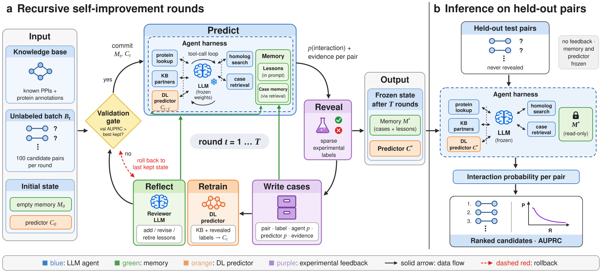

Research status
Can an LLM scientific agent that combines a DL predictor with biological evidence learn from sparse experimental feedback? Does it gain more from the same labels than the DL predictor retrained on them?
This page gives the task, the current design and the current results, as of 2026-11-26. Full results: classification-test summary.
1. Task
Let \(V\) be a set of proteins. An unordered pair \(e = \{u, v\}\), \(u \ne v\), has a label \(y(e) \in \{0, 1\}\); \(y(e) = 1\) means that the proteins interact. Four disjoint sets of pairs make the splits (Table 1).
Table 1. The four splits and their sizes on the two benchmarks: labelled pairs (positives). 22T: private mouse membrane PPIs. PRING: public human PPIs; its development set is every pair of the 1,211 development proteins (1.41% positive), and the PRING runs of section 3 used an earlier, balanced set of 20,668 pairs.
| Split | Role | Labels visible | 22T | PRING |
|---|---|---|---|---|
| Training set \(\mathcal{K}\) | Trains the DL predictor \(f_\theta(e) \in [0, 1]\); the agent can look it up | Always | 65,912 (32,956) | 63,246 (31,623) |
| Validation set \(\mathcal{D}_{\text{va}}\) | Selection only: DL hyperparameters and epoch, and the gate of each round | Never to the agent; no round reveals them | 9,364 (4,682) | 9,406 (4,703) |
| Development set \(\mathcal{D}_{\text{dev}}\) | Each round reveals the labels of one batch. These labels are the only feedback | After the round that reveals them | 10,000 (5,000) 10 × 100 revealed | 732,655 (10,334) 10 × 200 revealed |
| Final test \(\mathcal{D}_{\text{fin}}\) | Fixed before any run; scored once, after the last round | Never | 8,366 (4,183) | 10,280 (5,140) |
Rounds
The system has two objects. The archive \(A_t\) holds every revealed pair with its label, the prediction of the system and the evidence. It only grows, and \(A_0 = \emptyset\). The state in use \(S_t\) holds the parts that the update target of the arm can change (Table 2): the predictor parameters \(\theta\), the case memory and the lessons. The case memory is the archive itself: a revealed case is a fact, so it is in use at once and no gate can remove it. The gate decides only the derived parts: the lessons and the predictor. All other parts are fixed: the LLM weights, the prompt templates and the tools. \(S_0\) depends only on \(\mathcal{K}\): empty memory, predictor trained on \(\mathcal{K}\). Each round \(t = 1, \dots, T\) has five steps:
- Batch. An acquisition rule chooses \(b\) pairs that no earlier round revealed: \(B_t = \pi(S_{t-1},\ \mathcal{D}_{\text{dev}} \setminus A_{t-1})\). The rule is a random draw (the control: the same batches for every arm), the highest predictor scores, or the system's own picks.
- Predict. Before the reveal, the system gives \(\hat p(e \mid S_{t-1})\) for each \(e \in B_t\).
- Reveal. The oracle returns \(y(e)\) for each \(e \in B_t\). This simulates a wet-lab assay. The pairs go to the archive: \(A_t = A_{t-1} \cup \{(e,\ y(e),\ \hat p(e)) : e \in B_t\}\). They stay there if the round is kept or dropped.
- Candidate. \(S'_t = U(S_{t-1},\ A_t)\) is built from the state in use and the whole archive: the predictor is retrained from scratch on \(\mathcal{K}\) plus all revealed labels, and the reviewer revises the lessons in use with the cases revealed since the last kept round.
- Gate. One gate judges the final output of the system. The candidate and the best kept state \(S^\ast_{t-1}\) score the same validation pairs, and \(g\) is the AUPRC of that output. The candidate replaces the state in use unless it is clearly worse: it is dropped only if it has the lower \(g\) in at least 90% of 2,000 paired bootstrap resamples of the pairs (\(P_{\text{boot}}\)). After a drop the lessons and the predictor in use stay as they are, and the candidate is saved as a record. Its labels and cases are not lost: the agent already sees the cases, and the next candidate predictor trains on the labels again.
\[ S_t = \begin{cases} S_{t-1} & \text{if } P_{\text{boot}}\big[\, g(S'_t) < g(S^\ast_{t-1}) \,\big] \ge 0.9 \\ S'_t & \text{otherwise} \end{cases} \qquad S^\ast_{t-1} = \arg\max_{s < t,\ s \text{ kept}} g(S_s) \]
\(S_0\) is kept. The DL predictor gates on all of \(\mathcal{D}_{\text{va}}\). An agent gates on 400 fixed pairs of \(\mathcal{D}_{\text{va}}\); when it uses a predictor that also updates, the candidate lessons and the candidate predictor are kept or dropped together. The experimental budget is \(bT\) labels. It is much smaller than \(\mathcal{D}_{\text{dev}}\), so the choice of the pairs can matter. After round \(T\), the state \(S_T\) is frozen.
These rules are the decision of 2026-11-26. The code follows them, but no run has used them yet: the runs of section 3 used earlier rules (section 4).
Objectives
Primary: final test metrics. The frozen system gives \(\hat p(e \mid S_T)\) for each \(e \in \mathcal{D}_{\text{fin}}\). We report AUPRC (main) and AUROC, which need no threshold. We also report precision, recall, F1, specificity, accuracy and MCC at one decision threshold. This threshold is the one with the best F1 of the same frozen state on the validation pairs (an agent: the 400 gate pairs; the DL predictor: all of \(\mathcal{D}_{\text{va}}\)), so the test labels play no part in it. The gain from the rounds is the score of \(S_T\) minus the score of \(S_0\) on the same \(\mathcal{D}_{\text{fin}}\). A separate run with no reveal rounds gives the score of \(S_0\), one run per system, and every arm of that system uses it. The reference is the DL predictor retrained on the same revealed labels.
Secondary: hits. They measure how well the system guides the wet-lab experiments: the number of interactions that the batches find (Roohani et al., ICLR 2025). We report them for every rule:
\[ \text{hits}(T) = \Big|\, \{e : y(e) = 1\} \cap \bigcup_{t=1}^{T} B_t \Big| \;\le\; bT . \]
Under the random rule the hits show the base rate of \(\mathcal{D}_{\text{dev}}\). This is the baseline for the rules that use the state.
2. Current design
This section describes the current system, which follows the rules of section 1. The runs of section 3 used earlier rules (section 4).

- Agent harness
- DeepSeek-V4 Pro (thinking high) in the pi runtime. Each batch is one fresh session with a cap on tool calls. Tools: protein annotations, protein search, sequence homologs, training-set partners, case retrieval and, in the arms with the predictor, the DL scores of up to 200 pairs per call. The session returns one probability and the evidence IDs for each pair.
- Memory
- Case memory: one record per revealed pair (label, the agent's p, the predictor's p, evidence), written by the system and read through case retrieval. Lessons: at most 30 active rules, each with supporting and contrary cases, written by a reviewer session with the same LLM and put in the prompt.
- DL predictor
- An ESM-3 motif-graph pair classifier (V3). Candidate \(t\) is retrained from scratch on \(\mathcal{K}\) plus all labels revealed in rounds 1 to \(t\). In a round the agent sees the predictor in use; it sees the candidate only in the gate check.
- Gate
- One gate after every round, on both benchmarks, on the final output of the system. The DL predictor uses the full validation set. Each agent uses 400 fixed validation pairs (200 positive), scored without memory updates. A paired bootstrap compares the candidate with the best kept state, and the candidate is dropped only if it is clearly worse. After a drop the lessons and the predictor in use do not change. The revealed cases are never gated: the agent sees every revealed case in the next round. So the arm with case memory only has no gate.
- Arms
- An arm is an update target (Table 2), a system and an acquisition rule. The update target is the central axis: it says what the revealed labels change. Systems: the DL predictor retrained on the revealed labels; the LLM-only agent; the LLM agent with the DL predictor. Baseline rule on both benchmarks: a random draw from the development set, with a fixed seed and no use of the labels (as in Zeng and Luo, 2026), so every arm gets the same 10 batches. Baseline arm: the DL predictor with the random rule. Every arm has the same final test. One run per arm.
- Discovery track
- The run where the agent picks its own batches on PRING: 10 × 200 pairs from all 732,655 pairs of the development proteins, and the metric is the hits. A batch with a pair that was already tested or that is listed twice is rejected at submission, and the agent sends it again (in the run of 2026-11-02, before this rule, 105 of 2,000 picks were repeats). Every rule now draws from the same pairs, so this run joins the main comparison: the random rule gives the base rate (26 positives in its 2,000 pairs). The picks are still in separate code with the earlier gate (section 4).
Table 2. Update targets: the parts of the system state \(S_t\) that the revealed labels can change. The LLM weights and the protein language model stay frozen in every arm. The acquisition rule is the second axis of an arm and is not an update target here. Earlier work lists only iterative feedback-update systems on similar tasks (no static PPI or DL models, benchmarks or LLM weight-tuning loops); each name links to the paper.
| Update target | What changes | Earlier work that updates it | Status |
|---|---|---|---|
| Predictor weights | The DL predictor is trained again on the training set plus all revealed labels | Zeng & Luo, EVOLVEpro, PerTurboAgent, MatClaw, MolPAL, Mohamed et al., Pioneer Agent | Built |
| Predictor recipe | Hyperparameters, input features, curation of the revealed labels, pseudo-labels | Zeng & Luo, SRO, Centaur, AutoProteinEngine, CAPO, MLE-STAR, R&D-Agent, Agentomics, TusoAI | Not built |
| Predictor architecture | The model family or its layers | AgentNAS, AIDE, AIRA₂, MARBLE, MoLRSI, BioDyad, HarmonyCell, ML-Master | Not built |
| Case memory | One case per revealed pair: label, the agent's p, the predictor's p, evidence | Evo-Memory, Semantic & Episodic Memory, GSEM, ReMe, DS-Agent, DrugSAGE, BioDiscoveryAgent | Built |
| Lessons | At most 30 rules, each with supporting and contrary cases | ACE, Semantic & Episodic Memory, Dynamic Cheatsheet, PiEvo, OMCE, FLEX, Faulty Memories, Honest Lying, SIM | Built |
| Prompt | The instructions of the agent | OPRO, Promptbreeder, MIPROv2, GEPA | Not built |
| Tools | New or changed tools, such as a new evidence look-up | ADAS, SICA, Darwin Gödel Machine, VenusFactory2 | Not built |
| Workflow | The order of steps and the harness code | AFlow, STOP, Gödel Agent, Darwin Gödel Machine, Huxley-Gödel Machine, HyperAgents, Mendel Gödel Machine, AIDE², Meta-Harness, MESH-Harness, Self-Harness, MoSIB, TTHE, SIFT, MemEvolve, Modular Gated Evolution, Janus | Not built |
3. Current results
Each table has one row per arm, as in Zeng and Luo (2026, Does reflective LLM feedback survive a wet-lab-scale label budget?). Their controller axis says who edits the predictor; our update target says what the revealed labels change (Table 2). The baseline row is the DL predictor with the random rule, where only the predictor weights change (their "no edits" arm with random acquisition).
Status. No run has used the rules of section 1 yet. Under the earlier round rules, done on both benchmarks: the DL predictor arms (both rules) and the LLM-only agent arm with case memory and lessons (random rule). Each table has one block per set of rules and splits.
Table 3. 22T final test (8,366 pairs, the same in every row): AUPRC and AUROC after 10 rounds with the gate; higher is better, chance ≈ 0.5. Hits: positives among the pairs that the rounds revealed. Earlier split without the gate: AUPRC 0.712, 0.573 and 0.691. Bold: best per column and block.
| Update target | System | Acquisition rule | AUPRC | AUROC | Hits |
|---|---|---|---|---|---|
| Rules of section 1 · no run yet | |||||
| None (score before the rounds) | LLM-only agent | None (no rounds) | not run | – | |
| None (score before the rounds) | LLM agent + DL predictor | None (no rounds) | not run | – | |
| Predictor weights baseline | DL predictor | Random | not run | 484 / 1,000 | |
| Case memory | LLM-only agent | Random | not run | 484 / 1,000 | |
| Case memory + lessons | LLM-only agent | Random | not run | 484 / 1,000 | |
| Case memory + lessons (predictor frozen) | LLM agent + DL predictor | Random | not run | 484 / 1,000 | |
| Predictor weights + case memory + lessons | LLM agent + DL predictor | Random | not run | 484 / 1,000 | |
| Predictor weights + case memory + lessons + prompt | LLM agent + DL predictor | Random | not run | 484 / 1,000 | |
| Predictor weights + case memory + lessons + tools | LLM agent + DL predictor | Random | not run | 484 / 1,000 | |
| Predictor weights + recipe | DL predictor | Random | not run | 484 / 1,000 | |
| Predictor weights | DL predictor | Highest predictor score | not run | ||
| Case memory + lessons | LLM-only agent | The agent's own picks | not run | ||
| Predictor weights + case memory + lessons | LLM agent + DL predictor | The agent's own picks | not run | ||
| Earlier round rules (section 4) · the splits of Table 1 | |||||
| Predictor weights baseline | DL predictor | Random | 0.719 | 0.726 | 484 / 1,000 |
| Case memory + lessons | LLM-only agent | Random | 0.592 | 0.575 | 484 / 1,000 |
| Predictor weights | DL predictor | Highest predictor score | 0.720 | 0.723 | 840 / 1,000 |
| Earlier split (before 2026-11-24) · preset batches, 50 positives and 50 negatives per round | |||||
| Predictor weights baseline | DL predictor | Preset | 0.735 | 0.738 | 500 / 1,000 |
| Case memory + lessons | LLM-only agent | Preset | 0.593 | 0.577 | 500 / 1,000 |
| Predictor weights + case memory + lessons | LLM agent + DL predictor | Preset | 0.715 | 0.727 | 500 / 1,000 |
| None | DL predictor trained on PRING (human), no 22T training | None (no rounds) | 0.597 | 0.578 | – |
Table 4. PRING final test (10,280 pairs, public labels); columns as in Table 3. In the discovery-track block, 1.41% of the candidate pairs are positive.
| Update target | System | Acquisition rule | AUPRC | AUROC | Hits |
|---|---|---|---|---|---|
| Rules of section 1 · no run yet | |||||
| None (score before the rounds) | LLM-only agent | None (no rounds) | not run | – | |
| None (score before the rounds) | LLM agent + DL predictor | None (no rounds) | not run | – | |
| Predictor weights baseline | DL predictor | Random | not run | 26 / 2,000 | |
| Case memory | LLM-only agent | Random | not run | 26 / 2,000 | |
| Case memory + lessons | LLM-only agent | Random | not run | 26 / 2,000 | |
| Case memory (predictor frozen) | LLM agent + DL predictor | Random | not run | 26 / 2,000 | |
| Case memory + lessons (predictor frozen) | LLM agent + DL predictor | Random | not run | 26 / 2,000 | |
| Predictor weights + case memory + lessons | LLM agent + DL predictor | Random | not run | 26 / 2,000 | |
| Predictor weights | DL predictor | Highest predictor score | not run | ||
| Case memory + lessons (predictor frozen) | LLM agent + DL predictor | The agent's own picks | not run | ||
| Earlier round rules (section 4) · a balanced development set of 20,668 pairs (10,334 positive) | |||||
| Predictor weights baseline | DL predictor | Random | 0.697 | 0.678 | 1,012 / 2,000 |
| Case memory + lessons | LLM-only agent | Random | 0.824 | 0.780 | 1,012 / 2,000 |
| Predictor weights | DL predictor | Highest predictor score | 0.695 | 0.667 | 1,781 / 2,000 |
| Discovery track on the earlier split (before 2026-11-24) · picks of the LLM agent with the DL predictor from all 732,655 pairs of the development proteins; no gate; validation pairs in the look-up set | |||||
| Predictor weights, one retraining after round 10 baseline | DL predictor | The agent's picks | 0.717 | 0.695 | 1,624 / 1,895 |
| Case memory | LLM-only agent | The agent's picks | 0.811 | 0.769 | 1,624 / 1,895 |
| Case memory (predictor frozen) | LLM agent + DL predictor | The agent's picks | 0.804 | 0.769 | 1,624 / 1,895 |
| Case memory + lessons (predictor frozen) | LLM agent + DL predictor | The agent's picks | 0.803 | 0.767 | 1,624 / 1,895 |
Table 5. Final test: AUPRC of the DL predictor after round 10 minus its AUPRC before round 1 (the same initial checkpoint for both rules of a benchmark), paired bootstrap over the final-test pairs (22T 8,366; PRING 10,280), 95% interval; higher is better.
| DL predictor arm | Before round 1 | After round 10 | Difference [95% interval] | Rounds kept by the gate |
|---|---|---|---|---|
| 22T, random rule baseline | 0.714 | 0.719 | +0.005 [−0.003, +0.013] | 1 of 10 (round 1) |
| 22T, highest predictor score | 0.714 | 0.720 | +0.006 [−0.002, +0.014] | 1 of 10 (round 6) |
| PRING, random rule baseline | 0.695 | 0.697 | +0.002 [−0.003, +0.007] | 1 of 10 (round 6) |
| PRING, highest predictor score | 0.695 | 0.695 | 0 (no round kept) | 0 of 10 |
Reading (earlier round rules, splits of 2026-11-24)
- The revealed labels do not change the DL predictor's final-test AUPRC. On 22T the difference is +0.005 with the random rule and +0.006 with the highest-score rule. On PRING it is +0.002 with the random rule. All three intervals include 0 (Table 5). The PRING random arm gains AUROC: 0.667 to 0.678, +0.011 [+0.006, +0.016].
- The gate keeps few DL rounds. It keeps 1 of 10 in each 22T arm and in the PRING random arm, and none on PRING with the highest-score rule, where the predictor stays at the initial checkpoint (0.695) (Table 5).
- The highest-score rule reveals far more positives, but the predictor does not gain from them. 22T: 840 against 484 of 1,000. PRING: 1,781 against 1,012 of 2,000 (Tables 3, 4).
- The LLM-only agent with memory is far below the DL predictor on 22T and far above it on PRING. 22T: AUPRC 0.592 against 0.719 (Table 3). PRING: 0.824 against 0.697, and the difference to the initial predictor is +0.128 [+0.117, +0.139] (Table 4).
- The gate keeps few agent rounds too. It keeps 2 of 10 on 22T (rounds 1 and 4) and 1 of 10 on PRING (round 2), so the final memory has 200 cases on each benchmark. The validation AUPRC (selection only, 400 pairs) went from 0.574 to 0.650 on 22T and from 0.834 to 0.851 on PRING.
- The gain of the agents from the rounds is not measured yet. These splits have no final-test run of the agents without reveal rounds (section 4).
To come when the runs under the rules of section 1 are done: a figure like Figure 1 of Zeng and Luo (2026), with the curves over the rounds for each arm and the paired differences between arms with their 95% intervals.
Reading (splits before 2026-11-24)
- The DL predictor gains most from the revealed labels. Its AUPRC goes up by 0.019 (0.716 before the rounds, 0.735 after), against +0.003 and +0.005 for the agents.
- The agent with the DL predictor stays below the retrained DL predictor alone. AUPRC 0.715 against 0.735 (Table 3).
- The gate keeps few rounds (1 to 3 of 10), and without it every arm ends lower (Table 3 caption).
- On PRING the case memory adds AUPRC, and the lessons add nothing beyond the cases. The case memory adds +0.028 for the agent with the DL predictor (from 0.775) and +0.010 for the LLM-only agent (from 0.801, the matched run of 2026-11-24). The retrained DL predictor gains +0.021 (from 0.695) (Table 4).
- In the discovery track the agent's picks find interactions far above the base rate. 1,624 of 1,895 valid picks are hits, against about 27 at the base rate of 1.41% (Table 4).
- Each arm has one run. The numbers are point estimates; the AUPRC of one 100-pair round varies by about ±0.05.
4. Not in the current design
The rules of section 1 were decided on 2026-11-26. The code follows them since that day, but it has not run yet. All runs of section 3 used these earlier rules:
- Gate. A round was kept only if its single validation AUPRC was higher than that of every earlier kept state. There was no bootstrap.
- Dropped rounds. The labels of a dropped round left the training data of the predictor, and its cases and lesson changes left the memory, for good.
- Two gates. In the arm where the agent uses a predictor that also updates, the DL run gated the predictor and the agent run gated the memory.
- Score before the rounds. The agents had no final-test run without reveal rounds. The run is now built (
reveal_rounds baseline). - PRING development set. The rounds drew from a balanced set of 20,668 pairs (10,334 positive), not from the development set of Table 1. Their random batches had 1,012 positives in 2,000 pairs; the new ones have 26.
Also not built:
- Every run under the rules of section 1 (the first blocks of Tables 3 and 4).
- The agent's own picks under the rules of section 1: they exist only in the discovery-track code on PRING, with the earlier gate. So the agent does not yet guide the experiments on private data.
- The rule that takes the scores nearest 0.5.
- Improvement of the prompts, tools or predictor architecture: only the memory and the predictor weights change.
- Replicate runs and a permuted-label control.